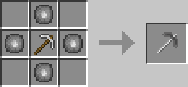
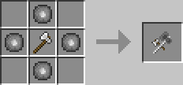
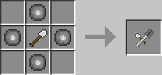

ケイブニウムと何かのツルハシを素材に作成できるツルハシです。
正確にはベースのツルハシに一括破壊や範囲破壊といった採掘補助機能を付与するプラグインのようなものです。

中心のツルハシは、ツルハシであれば、何でも素材にできます。(例: 木のツルハシ, 石のツルハシ, ダイヤのツルハシ)
他MODで追加されるツルハシにもだいたい対応しています。
採掘ツルハシを置けば、修復レシピにもなります。
ケイブニウムの代わりに上質なケイブニウムを置くと、等級の付与された採掘ツルハシをクラフトできます。
採掘ツルハシの破壊速度や耐久値などの主な性能は全てベースのツルハシに依存します。
ベースのツルハシの性能が良ければ採掘ツルハシの性能も良くなります。
上質なケイブニウムを含めてクラフトした採掘ツルハシに付与されます。
等級は最大でⅣまであり、高ければ高いほど快適な採掘ができます。
採掘ツルハシはいくつかの破壊モードを備えており、採掘ツルハシを持って右クリックすることで切り替えることができます。
通常モードです。普通のツルハシのように1ブロックずつ破壊できます。
ブロックを破壊した際に、周囲に直接繋がった同ブロックが存在すれば同時に破壊します。
マウスの中クリックをすることで、一括破壊の対象となるブロックの選択GUIを開けます。
ブロックを破壊した際に、周り1ブロックを含めた3×3の範囲を同時に破壊できます。
等級がI以上のもので使用できます。
マウスの中クリックをすることで、範囲破壊の対象となるブロックの選択GUIを開けます。
ブロックを破壊した際に、1×2の坑道となるように上もしくは下のブロックを同時に破壊します。
自分より下のブロックは同時に破壊しません。
マウスの中クリックをすることで、坑道掘りの対象となるブロックの選択GUIを開けます。
ノーマルモード以外での同時破壊では、破壊した分だけ耐久値を消費します。
また、破壊するブロックの数に応じて、破壊するまでにかかる時間が変わります。
ただし、等級が付与されているものであれば、等級に応じて補正がかかります。
ケイブニウムと何かの斧を素材に作成できる斧です。
正確にはベースの斧に木こりや一括破壊といった伐採補助機能を付与するプラグインのようなものです。

中心の斧は、斧であれば、何でも素材にできます。(例: 木の斧, 石の斧, ダイヤの斧)
他MODで追加される斧にもだいたい対応しています。
伐採斧を置けば、修復レシピにもなります。
ケイブニウムの代わりに上質なケイブニウムを置くと、等級の付与された伐採斧をクラフトできます。
伐採斧の破壊速度や耐久値などの主な性能は全てベースの斧に依存します。
ベースの斧の性能が良ければ伐採斧の性能も良くなります。
上質なケイブニウムを含めてクラフトした伐採斧に付与されます。
等級は最大でⅣまであり、高ければ高いほど快適な伐採ができます。
伐採斧はいくつかの破壊モードを備えており、伐採斧を持って右クリックすることで切り替えることができます。
通常モードです。普通の斧のように1ブロックずつ破壊できます。
いわゆる木こりに適したモードです。
ブロックを破壊した際に、それより上の直接繋がった同ブロックが存在すれば同時に破壊します。
マウスの中クリックをすることで、伐採の対象となるブロックの選択GUIを開けます。
ブロックを破壊した際に、周囲に直接繋がった同ブロックが存在すれば同時に破壊します。
マウスの中クリックをすることで、一括破壊の対象となるブロックの選択GUIを開けます。
ブロックを破壊した際に、周り1ブロックを含めた3×3の範囲を同時に破壊できます。
等級がI以上のもので使用できます。
マウスの中クリックをすることで、範囲破壊の対象となるブロックの選択GUIを開けます。
ノーマルモード以外での同時破壊では、破壊した分だけ耐久値を消費します。
また、破壊するブロックの数に応じて、破壊するまでにかかる時間が変わります。
ただし、等級が付与されているものであれば、等級に応じて補正がかかります。
ケイブニウムと何かのシャベルを素材に作成できるシャベルです。
正確にはベースのシャベルに一括破壊や範囲破壊といった掘削補助機能を付与するプラグインのようなものです。

中心のシャベルは、シャベルであれば、何でも素材にできます。(例: 木のシャベル, 石のシャベル, ダイヤのシャベル)
他MODで追加されるシャベルにもだいたい対応しています。
掘削シャベルを置けば、修復レシピにもなります。
ケイブニウムの代わりに上質なケイブニウムを置くと、等級の付与された掘削シャベルをクラフトできます。
掘削シャベルの破壊速度や耐久値などの主な性能は全てベースのシャベルに依存します。
ベースのシャベルの性能が良ければ掘削シャベルの性能も良くなります。
上質なケイブニウムを含めてクラフトした掘削シャベルに付与されます。
等級は最大でⅣまであり、高ければ高いほど快適な掘削ができます。
掘削シャベルはいくつかの破壊モードを備えており、掘削シャベルを持って右クリックすることで切り替えることができます。
通常モードです。普通のシャベルのように1ブロックずつ破壊できます。
ブロックを破壊した際に、周囲に直接繋がった同ブロックが存在すれば同時に破壊します。
マウスの中クリックをすることで、一括破壊の対象となるブロックの選択GUIを開けます。
ブロックを破壊した際に、周り1ブロックを含めた3×3の範囲を同時に破壊できます。
等級がI以上のもので使用できます。
マウスの中クリックをすることで、範囲破壊の対象となるブロックの選択GUIを開けます。
ノーマルモード以外での同時破壊では、破壊した分だけ耐久値を消費します。
また、破壊するブロックの数に応じて、破壊するまでにかかる時間が変わります。
ただし、等級が付与されているものであれば、等級に応じて補正がかかります。
他にも以下のアイテムが追加されます。